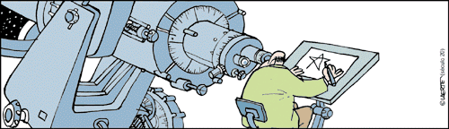

PHYS10140 - Descriptive Astronomy (Summer 2019)

Syllabus
Online: syllabus.pdf
Textbook
Online:
https://openstax.org/details/books/astronomy
PDF version:
https://d3bxy9euw4e147.cloudfront.net/oscms-prodcms/media/documents/Astronomy-OP_RoX1Ths.pdf
Lectures
Contact